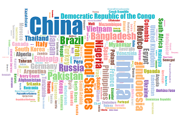

This parameter allows you to control the outer padding separately from the inner padding between bars.

Sankey diagrams visualize the magnitude of flow between nodes in a network.

Bar chart comparing there variables in parallel,to show the distribution

Area Map comparing three variables in parallel, to show the distribution

Treemaps display hierarchical (tree-structured) data as a set of nested rectangles. Each branch of the tree is given a rectangle.
A word cloud, or tag cloud is a visual representation for text data, typically used to depict keyword on websites

A cartogram is a map with some thematic variable such as travel time, population ssis substituted for land area or distance.

Showing you a flythrough of where you'll be going as they pull up trip prices

A scatterplot using d3js. It maps social trust against ease of doing business in various countries. For tooltips

In a polar clock, each ring encodes each time field. The outermost ring represents second, followed by minutes etc

This psychedelic example, reminiscent of an earthworm, demonstrates the difference between a segmented and unsegmented line.

Barchart gives you 2 dimesions to view one stacked together one above the other and another showing you the view of individuals with transistion

A heat map is a graphical representation of data where the individual values in a matrix are represented as colors.
A design commonly used in design patterns. It consists of rays radiating out from a central disk .

This variation of a simple bar chart adds sorting with staggered delay and translucency to improve readability during the transition

Barchart gives you 2 dimesions to view one grouped together parallel or stacked together one above the other with transistion

bullet charts compare a given quantitative measure (such as profit or revenue) against qualitative ranges (e.g., poor, satisfactory, good)

The tree layout produces tidy node-link diagrams of trees using the Reingold–Tilford “tidy” algorithm

A scatter plot is a type of mathematical diagram using Cartesian coordinates to display values for two variables .

A flexible force-directed graph layout implementation using position Verlet integration to allow simple constraints

histogram of an Irwin–Hall distribution. The values are then binned at regular intervals using D3’s histogram layout.

This variation of a bivariate area chart uses clipping to alternate colors. the difference between the two is filled in green and red.

dataset is an array of numbers with both positive and negative values. Use two scales to construct the bar chart

The nodes you can create by clicking on the free place , and create the link by placing 2 or more nodes on the circle ring
This two-value area chart storing the daily high and low temperature in San Francisco

directed relationships among a group of entities, simple interactivity by using mouseover filtering.

graphical train schedule. Stations are separated vertically in proportion to geography; ,the slope of the line reflects the speed of the train

This line chart is constructed storing the daily average temperatures of Chennai, Delhi and Mumbai

This “icicle” diagram uses d3.layout.partition to divide space with area proportional to the value of nodes in a tree.

A Marimekko Chart, inspired by Freakalytics. Thanks to Noah Iliinsky for the suggestion.

Chicago Data Portal, with the datasets grouped by categories and dimensions drawn based on the size of the individual datasets.
The distribution of unemployment for 380 U.S. metropolitan areas from January 2000 to December 2012. weighted each area equally

This variation of a threshold encoding demonstrates how to use clipping to change the color of a line based on a y-threshold.

Ben Fry’s zipdecode, inspired by Nelson Minar’s reimplementation. uses cross-fading canvas elements to render transitions efficiently.

This variation of a stacked bar chart shows percentages rather than absolute numbers.

A cluster plot in general is a group or bunch of several discrete items that are close to each other